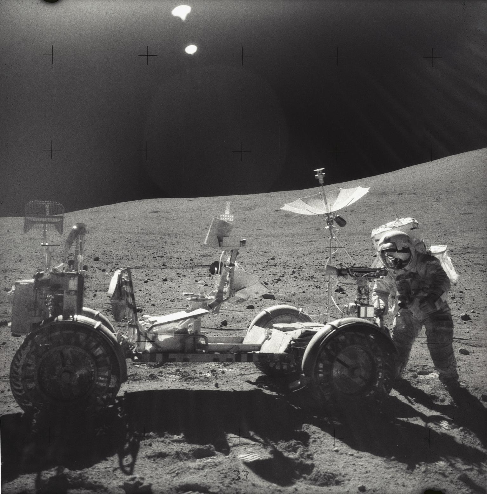

Apollo 16 was the fifth mission to land humans on the Moon and the second mission to use the Lunar Rover. Launched on April 16, 1972, the crew consisted of Commander John Young, Lunar Module Pilot Charles Duke, and Command Module Pilot Thomas Mattingly.
The mission's primary objective was to explore the lunar highlands, a region that scientists believed could reveal important information about the Moon's geological history. By studying a different type of terrain than previous missions, researchers hoped to better understand how the Moon formed and evolved.
Apollo 16 reached lunar orbit without major problems, but mission controllers detected an issue involving the spacecraft's propulsion systems. NASA carefully evaluated the situation before deciding it was safe to proceed with the landing.
Young and Duke descended to the surface aboard the Lunar Module Orion, touching down in the Descartes Highlands. Their landing site was dramatically different from locations visited by earlier Apollo missions.
Once on the surface, the astronauts began preparing for one of the most extensive exploration programs of the Apollo era.
Using the Lunar Rover, Young and Duke traveled across the rugged lunar landscape and visited numerous geological features. They collected samples, photographed rock formations, and deployed scientific instruments.
The astronauts spent more than twenty hours conducting activities outside the spacecraft over the course of three moonwalks. Their exploration covered a greater distance than any previous Apollo crew had traveled.
Scientists were particularly interested in determining whether the highlands had formed through volcanic activity or impact events. The samples collected during Apollo 16 provided important evidence that helped answer this question.
While his crewmates explored the surface, Thomas Mattingly conducted scientific experiments from lunar orbit. Using specialized instruments, he photographed the Moon and collected data about its environment.
One of the mission's most memorable moments occurred during the return journey when Mattingly performed a deep-space spacewalk to retrieve film canisters from the Service Module.
Apollo 16 expanded humanity's understanding of the Moon's highland regions and provided a wealth of geological information. The mission demonstrated the increasing sophistication of lunar exploration techniques and highlighted the scientific value of the Apollo program.
The success of Apollo 16 set the stage for Apollo 17, the final mission of the Apollo era.